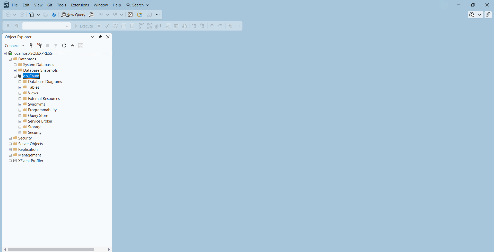
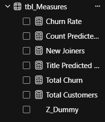
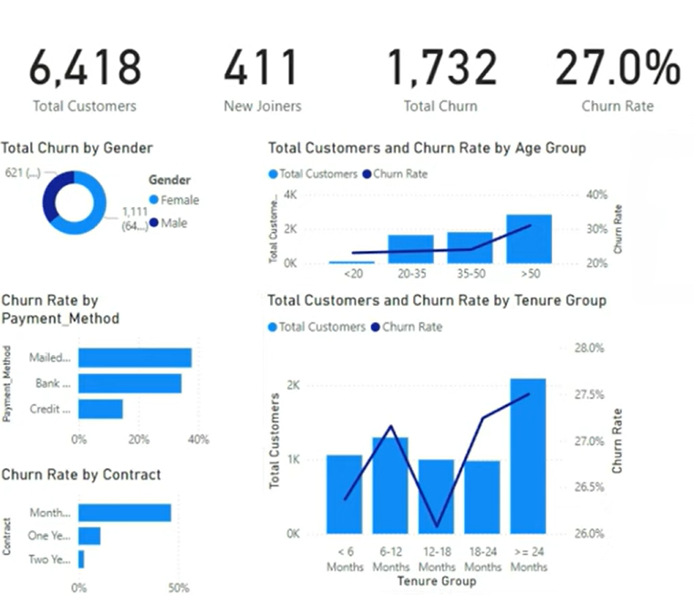
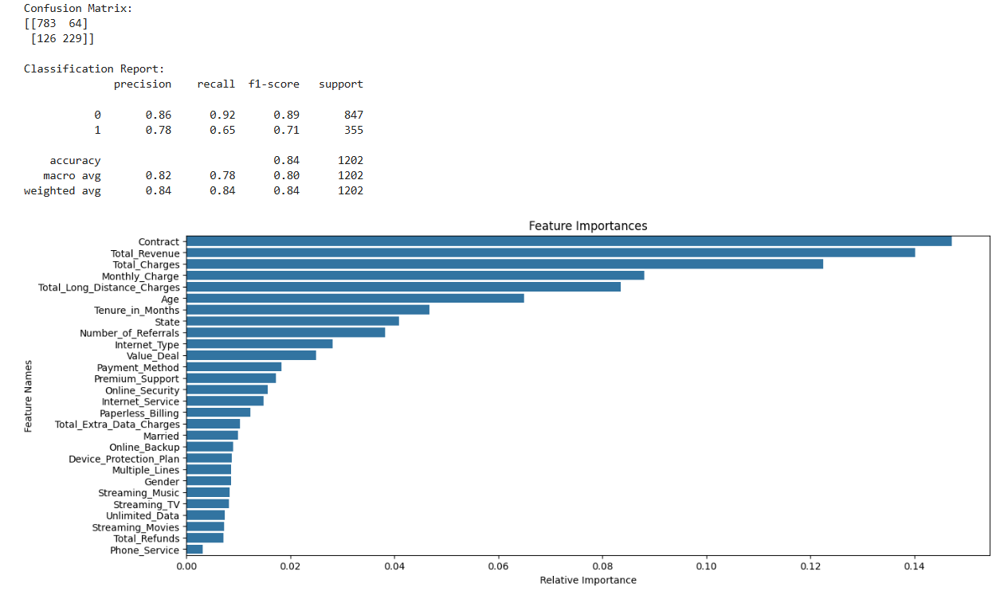
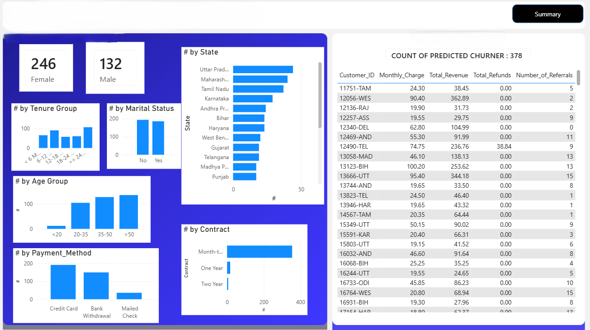

Developed a complete analytics project to understand and predict customer churn. Built an ETL pipeline in SQL Server to clean and transform customer data. Designed a Power BI dashboard to visualize key metrics such as churn rate, customer segments, and revenue loss. Implemented predictive modeling to identify high-risk customers and support proactive retention strategies.
การศึกษาข้อมูลลูกค้าเพื่อดูว่าลูกค้าคนไหนมีแนวโน้มจะเลิกใช้บริการ (churn) , ช่วยให้เข้าใจพฤติกรรมลูกค้า และปัจจัยเสี่ยงต่างๆ , และหาปัจจัยที่ทำให้เกิด churn เพื่อช่วยให้บริษัทสามารถวางแผนกลยุทธ์รักษาลูกค้าได้ดีขึ้น
1.1 เตรียม SQL Server และ Database
- dataset : https://pivotalstats.com/wp-content/uploads/2024/08/Data-Resources.zip
- SQL Server และ SQL Server Management Studio (SSMS)
- Server: ชื่อ SQL Server (เช่น localhost\SQLEXPRESS)
- Database เช่น db_Churn
1.2 สร้าง Table ชั่วคราวสำหรับโหลดข้อมูล (stg_table)
- นำข้อมูล CSV โหลดเข้ามาใน stg_Churn
- ก่อนนำเข้าข้อมูลจริง , สร้าง stg_Churn เพื่อเช็คความถูกต้องของข้อมูลก่อน
1.3 ทำความสะอาดข้อมูล (Data Cleaning / Transformation)
- แทนค่าที่เป็น NULL ด้วยค่า default หรือ “Unknown”
- แก้ค่าที่ไม่ถูกต้อง (เช่นถ้า Total_Charge น้อยกว่า 0 ให้เป็น 0)

2.1 สร้าง Production Table โดยนำข้อมูลจาก stg_Churn
- SELECT ... INTO prod_Churn FROM stg_Churn;
- Clean / Transform Data เพิ่มเติม
2.2 สร้าง Column ใหม่สำหรับวิเคราะห์
- Age Group (แยกอายุ เช่น ใน 20 35 50 ปี)
- Tenure Group (อายุการใช้งาน เช่น 6 เดือน 12 เดือน 1-2 ปี)
2.3 Validate Production Table
- ตรวจสอบว่า ไม่มี NULL หรือค่าผิดปกติ ในคอลัมน์สำคัญ (Customer_ID, Churn_Flag)
3.1 เชื่อมต่อ Power BI กับ SQL Server
- เปิด Power BI Desktop → เลือก Get Data → SQL Server
- localhost\SQLEXPRESS , db_Churn
3.2 ตรวจสอบ Data Types ของแต่ละ Column
- คลิก Transform Data และ ตรวจสอบแต่ละ Column มี Data Type ถูกต้อง
3.3 สร้าง Calculated Columns
- เช่น Churn_Status = if [Churn_Flag] = 1 then "Churned" else "Stayed"
- Monthly Charge Group , Age Group , Tenure Group
3.4 สร้าง Measures สำหรับ Dashboard
- เช่น Churn_Rate = DIVIDE([Total_Churn],[Total_Customers],0)

- สร้าง Visual Card ต่างๆ เช่น Clustered Bar Chart , Stacked Column Chart , Bar Chart
- สร้าง Demographics Visualization ต่างๆ เช่น Total Churn by Gender , Sum of Age
- Transorm Data สร้าง Query ใหม้ ref จาก prod_Churn = mapping_AgeGrp , mapping_TenureGrp
แล้วสร้าง column แยกอายุ

เปิด Python (Jupyter Notebook)
- ติดตั้ง Library : pip install pandas numpy scikit-learn matplotlib seaborn
- load data : df = pd.read_csv("churn_data.csv")
เตรียมข้อมูล (Data Preprocessing)
- ลบ column ที่ไม่จำเป็น
- แบ่งข้อมูล Train / Test : 80% train , 20% test
สร้างโมเดล Random Forest
- rf_model = RandomForestClassifier(n_estimators=100, random_state=42)
ทดสอบโมเดล (Evaluate the model)
- y_pred = rf_model.predict(X_test)
- Confusion Matrix และ Classification Report : ดูค่า Accuracy , Precision , Recall ,
F1-score
ทำนายลูกค้าใหม่
Export ผลลัพธ์กลับไปใช้ใน Power BI
- original_data.to_csv(r"...\Predictions.csv", index=False)

- นำ Predictions.csv เข้า Power BI
สร้าง Calculated Column จัดกลุ่มความเสี่ยง
- เช่น count predicted churner โดยแยกชายหญิง
- ใส่ background และ ตกแต่ง dashboard
